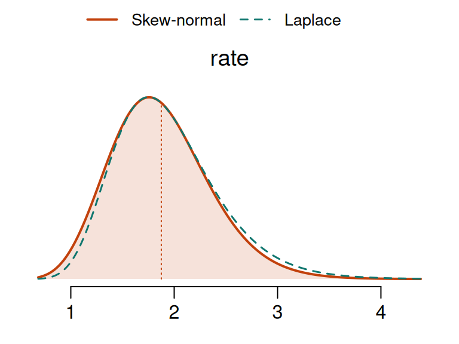
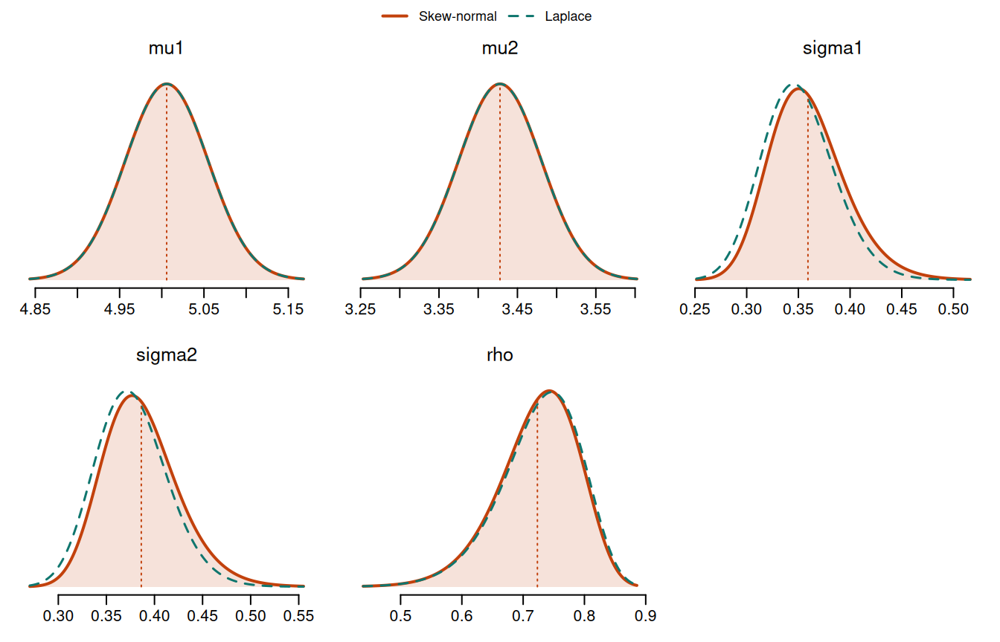

library(inlavanilla)
y <- c(2, 0, 3, 1, 4, 2, 1)
logpost <- function(theta, y) {
rate <- exp(theta[["log_rate"]])
sum(dpois(y, rate, log = TRUE)) +
dgamma(rate, 2, 1, log = TRUE) + # prior on the rate ...
theta[["log_rate"]] # ... and its Jacobian
}
fit <- inla_vanilla(logpost, init = c(log_rate = 0), y = y, silent = TRUE)
fit
#> ── INLAvanilla 0.1.1.9002 ───────────────────── Skew-normal + one-step VB ──
#>
#> Log marginal likelihood: -12.35 · Converged in 7 iterations (15ms)
#>
#> Mean SD 2.5% 50% 97.5% Mode
#> 1 rate 1.875 0.485 1.048 1.834 2.940 1.758
#>
#> ℹ Natural scale: rate = exp(log_rate).inla_vanilla() works on an unconstrained scale: a standard deviation goes in as its log, a probability as its logit, a correlation as its inverse hyperbolic tangent. Those are the right scales to compute on, and the wrong ones to read. A posterior mean of \(-0.42\) for \(\log\sigma\) takes a moment to turn into a statement about \(\sigma\).
So name a parameter for the scale it is on, and the results come back on its natural scale:
Name in init
|
logpost receives |
Reported as | For |
|---|---|---|---|
log_sigma |
\(\vartheta = \log\sigma\) |
sigma \(= e^{\vartheta}\)
|
a positive parameter: an SD, a variance, a precision, a rate, a shape |
logit_p |
\(\vartheta = \log\{p / (1 - p)\}\) |
p \(= 1 / (1 + e^{-\vartheta})\)
|
a parameter between 0 and 1: a probability, a proportion |
atanh_rho |
\(\vartheta = \operatorname{artanh}\rho\) |
rho \(= \tanh\vartheta\)
|
a parameter between \(-1\) and 1: a correlation |
The rule is short. You write on the unconstrained scale: logpost, grad, hess, the loglik of loo() and the fun of sampling() all receive the parameter under the name you gave it. You read on the natural scale: print(), summary(), coef(), plot() and the draws of sampling() all show the parameter without its prefix.
A rate
Seven Poisson counts, with a \(\mathrm{Gamma}(2, 1)\) prior on their rate \(\lambda\). The posterior is \(\mathrm{Gamma}(2 + \sum_i y_i, 1 + n)\), so there is an exact answer to compare with. The log-posterior is written on \(\vartheta = \log\lambda\), and the parameter is called log_rate:
The row is rate, not log_rate, and the line under the table says how it was obtained. Against the exact gamma posterior:
shape <- 2 + sum(y)
rate <- 1 + length(y)
rbind(
inlavanilla = fit$summary["rate", ],
exact = c(
shape / rate,
sqrt(shape) / rate,
qgamma(c(0.025, 0.5, 0.975), shape, rate),
(shape - 1) / rate
)
)
#> Mean SD 2.5% 50% 97.5% Mode
#> inlavanilla 1.875382 0.4849266 1.048049 1.834491 2.940146 1.757559
#> exact 1.875000 0.4841229 1.049423 1.833502 2.936203 1.750000plot() draws the marginal on the natural scale too. The dashed curve is the Laplace approximation carried to the same scale: a Gaussian for the log rate is a log-normal for the rate.
plot(fit)
What is mapped back, and how
Nothing in the fit changes. The mode, the covariance, the VB correction, the skew-normal scans and the log marginal likelihood are all computed on the scale of logpost, exactly as they would be under any other name. Each natural-scale row is then worked out from that parameter’s fitted skew-normal alone.
The quantiles are the fitted quantiles passed through the transform, since all three transforms are increasing. The mean, the SD and the mode are not: they are those of the distribution of the natural-scale parameter. summary() takes transform = FALSE to show the fit as logpost sees it, which makes the difference plain:
on_log <- summary(fit, transform = FALSE)$table
on_log
#> Mean SD 2.5% 50% 97.5% Mode
#> log_rate 0.5950781 0.2625895 0.04693026 0.606767 1.078459 0.6307562
cols <- c("Mean", "2.5%", "50%", "97.5%", "Mode")
rbind(
rate = fit$summary["rate", cols],
`exp(log_rate)` = exp(on_log["log_rate", cols])
)
#> Mean 2.5% 50% 97.5% Mode
#> rate 1.875382 1.048049 1.834491 2.940146 1.757559
#> exp(log_rate) 1.813173 1.048049 1.834491 2.940146 1.879031The quantiles agree. The mean of the rate is above the exponential of the mean of its log, and its mode is below the exponential of the mode, as the exact gamma posterior confirmed above.1
The diagnostics are different. They judge the approximation, which is made on the scale of logpost, so they stay there and keep the names of init:
diagnostics(fit, type = "param")[, c("names", "nmad", "alpha")]
#> names nmad alpha
#> 1 log_rate 0.0066 -1.3649plot(fit, type = "sn_fit"), which shows each skew-normal fit against its scan, is on that scale as well.
The Jacobian is still yours
The name changes how results are reported. It does not change what logpost means. logpost is still the log density of the parameter it receives, so a prior stated for the rate still needs its log-Jacobian, the + theta[["log_rate"]] above. Leaving it out targets a different posterior, and nothing downstream can tell.
Several parameters
The sepal lengths and widths of the 50 setosa irises, as a bivariate normal. There are two means, two standard deviations and a correlation. The standard deviations get \(\mathrm{Exp}(1)\) priors and the correlation a uniform one, each with its Jacobian:
setosa <- iris[iris$Species == "setosa", ]
x <- as.matrix(setosa[, c("Sepal.Length", "Sepal.Width")])
logpost_bvn <- function(theta, x) {
mu <- theta[c("mu1", "mu2")]
sigma <- exp(theta[c("log_sigma1", "log_sigma2")])
rho <- tanh(theta[["atanh_rho"]])
z1 <- (x[, 1] - mu[1]) / sigma[1]
z2 <- (x[, 2] - mu[2]) / sigma[2]
loglik <- -nrow(x) * (log(2 * pi) + sum(log(sigma)) + log1p(-rho^2) / 2) -
sum(z1^2 - 2 * rho * z1 * z2 + z2^2) / (2 * (1 - rho^2))
logprior <- sum(dnorm(mu, 0, 10, log = TRUE)) +
sum(dexp(sigma, 1, log = TRUE)) +
sum(log(sigma)) + # Jacobian of each SD
log(0.5) + # uniform prior on rho ...
log1p(-rho^2) # ... and its Jacobian
loglik + logprior
}
init <- c(mu1 = 5, mu2 = 3, log_sigma1 = 0, log_sigma2 = 0, atanh_rho = 0)
fit_bvn <- inla_vanilla(logpost_bvn, init, x = x, silent = TRUE)
fit_bvn
#> ── INLAvanilla 0.1.1.9002 ───────────────────── Skew-normal + one-step VB ──
#>
#> Log marginal likelihood: -39.67 · Converged in 33 iterations (46ms)
#>
#> Mean SD 2.5% 50% 97.5% Mode
#> 1 mu1 5.0058 0.0493 4.9091 5.0058 5.1024 5.0058
#> 2 mu2 3.4278 0.0530 3.3239 3.4278 3.5317 3.4278
#> 3 sigma1 0.3593 0.0370 0.2955 0.3562 0.4404 0.3503
#> 4 sigma2 0.3863 0.0397 0.3178 0.3830 0.4736 0.3767
#> 5 rho 0.7233 0.0661 0.5763 0.7297 0.8337 0.7426
#>
#> ℹ Natural scale: sigma1 = exp(log_sigma1), sigma2 = exp(log_sigma2), rho =
#> tanh(atanh_rho).The means are reported as they are, and the other three on their natural scales. The interval for the correlation stays inside \((-1, 1)\), and is longer on the side away from 1: an interval that is nearly symmetric on Fisher’s \(z\) is squeezed towards 1 when it is carried back.
plot(fit_bvn)
fit$transform records what was read from the names:
fit_bvn$transform
#> parameter name transform
#> mu1 mu1 mu1 identity
#> mu2 mu2 mu2 identity
#> log_sigma1 log_sigma1 sigma1 log
#> log_sigma2 log_sigma2 sigma2 log
#> atanh_rho atanh_rho rho atanhDraws and derived quantities
sampling() returns draws on the natural scale, under the natural names:
A quantity of one parameter can be taken straight from them. A quantity of several is what fun is for. fun is written like logpost: it receives each draw on the unconstrained scale, under the names of init. Here is the covariance of the two measurements, and the slope of the regression of width on length:
derived <- sampling(fit_bvn, nsamp = 10000, fun = function(theta) {
sigma <- exp(theta[c("log_sigma1", "log_sigma2")])
rho <- tanh(theta[["atanh_rho"]])
c(
covariance = rho * sigma[[1]] * sigma[[2]],
slope = rho * sigma[[2]] / sigma[[1]]
)
})
t(apply(derived, 2, quantile, c(0.025, 0.5, 0.975)))
#> 2.5% 50% 97.5%
#> covariance 0.06124972 0.09913891 0.1600525
#> slope 0.58066257 0.77928684 0.9984041The sample covariance is 0.099 and the least-squares slope 0.799, both well inside their intervals.
This is also the answer for anything that is not a one-to-one map of a single parameter. A covariance matrix, for one, ties its entries together, and no entry can be mapped back on its own. The correlation matrices article builds one from unconstrained parameters and reads it back through the draws.
Which scale to use
The three transforms are the usual choices, and they are the ones R-INLA makes for its own hyperparameters (Rue et al., 2009). Of the 291 hyperparameters that R-INLA (version 26.11) keeps on a transformed scale, 265 are on one of these: the log for 179 (precisions, shapes, ranges), the logit for 41 (probabilities), and for 45 correlations \(\log\{(1 + \rho) / (1 - \rho)\}\), which is twice Fisher’s \(z\). They are good scales for this method for the reason they are good for INLA: on them a posterior is usually close to Gaussian, and each skew-normal has only the remaining skewness to pick up.
A few points on choosing:
-
A standard deviation, a variance or a precision. Their logs differ only by a constant factor (\(\log\sigma^2 = 2\log\sigma\), \(\log\tau = -2\log\sigma\)), and a skew-normal rescaled is still a skew-normal, so the three give the same approximation. Use the one your prior and likelihood are written in, and name it accordingly:
log_sigmais reported as the SD,log_varas the variance. -
The name is taken literally. The part after the prefix is the name of what is reported, and it is the exponential, the inverse logit or the hyperbolic tangent of the parameter, whatever that is. A degrees-of-freedom parameter \(\nu > 2\) written as \(\vartheta = \log(\nu - 2)\) and named
log_nuwould be reported as \(\nu - 2\) under the namenu. Call itlog_nu_minus_2, or give it a name with no prefix and take \(\nu\) from the draws. -
Other bounds. A parameter on an interval \((a, b)\), or with a lower bound other than zero, has no prefix. Write the transform into
logpost, with its Jacobian, and usesampling(fit, fun = ...)for the natural scale. - No transform at all. Means, regression coefficients and anything else that can take any real value need no prefix and are reported as they are.
The rules for names
A prefix counts when it is log_, logit_ or atanh_, in lower case, followed by at least one more character. So log_sigma, log_sigma[2] and logit_p_treated are transformed, and logistic, log_, Log_sigma, logsigma and my_log_sigma are not.
A name that would clash is left alone. With parameters log_sigma and sigma in the same model, both rows would be called sigma, so log_sigma stays on the log scale and the fit warns once, naming it.
To switch the whole thing off, fit with transform = FALSE. Every parameter is then reported as logpost receives it:
fit_off <- inla_vanilla(
logpost,
init = c(log_rate = 0),
y = y,
transform = FALSE,
silent = TRUE
)
fit_off
#> ── INLAvanilla 0.1.1.9002 ───────────────────── Skew-normal + one-step VB ──
#>
#> Log marginal likelihood: -12.35 · Converged in 7 iterations (7ms)
#>
#> Mean SD 2.5% 50% 97.5% Mode
#> 1 log_rate 0.595 0.263 0.047 0.607 1.078 0.631The two fits are the same fit. summary(), plot() and sampling() take transform = FALSE as well, so there is no need to refit to see the other scale:
Only these three transforms are recognised for now, and a model cannot yet add its own.
References
Rue, H., Martino, S., & Chopin, N. (2009). Approximate Bayesian inference for latent Gaussian models by using integrated nested Laplace approximations. Journal of the Royal Statistical Society: Series B (Statistical Methodology), 71(2), 319–392. https://doi.org/10.1111/j.1467-9868.2008.00700.x